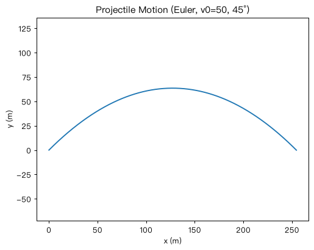

The Roadmap
挑战路线
Each challenge is a self-contained simulation. The previews below are real outputs generated by the reference solutions.
每个挑战都是独立的物理模拟。下方预览图全部来自参考实现的实际输出。
Zero prerequisite
零基础起点
No calculus, no physics background, no prior coding. Start with Challenge 00 · Python Crash Course.
不需要微积分、不需要物理背景、不需要编程基础。从「挑战 00 · Python 零基础速成」开始。
Reconstructive learning
重构式学习
"What I cannot create, I do not understand." Every formula is rebuilt in code before it is memorized.
「凡我不能创造的，我就尚未理解。」每个公式先在代码里重建，再装进脑袋。
Automated grading
自动评分
Each challenge ships with a SPEC and a verify script, wired into GitHub Actions for instant feedback.
每个挑战都包含 SPEC 与验证脚本，并接入 GitHub Actions，提交即得反馈。